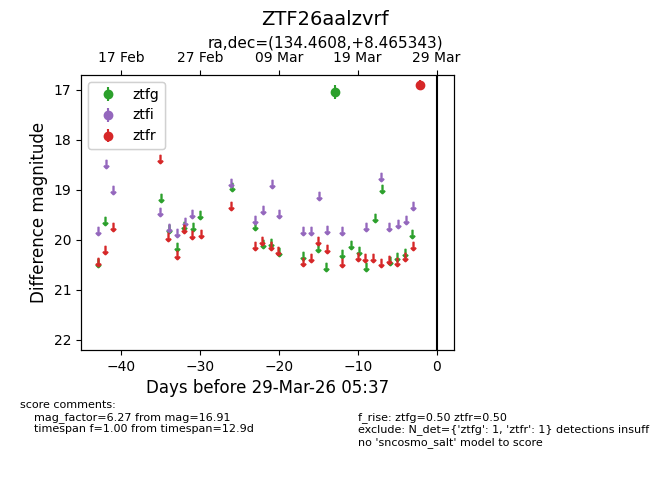
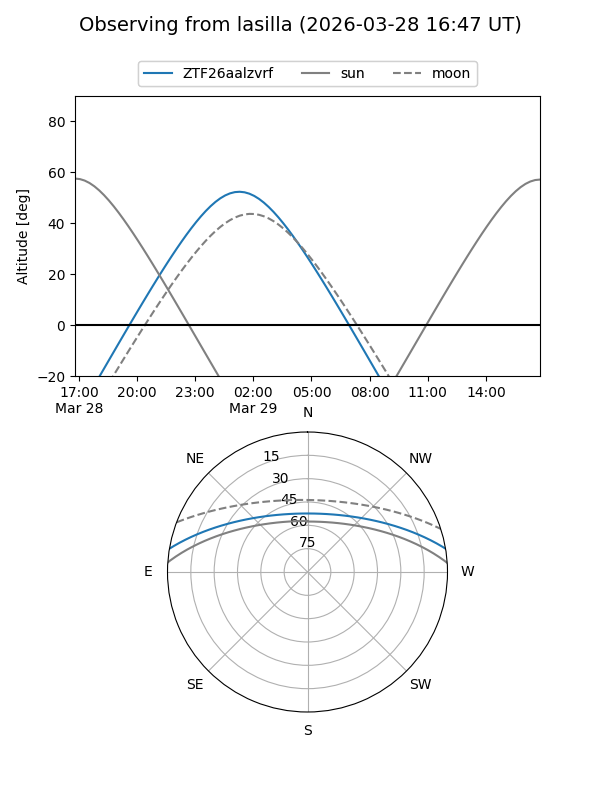
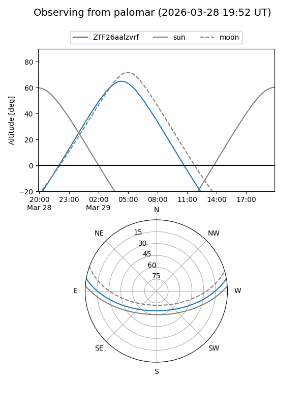

ZTF26aalzvrf
Target ZTF26aalzvrf at 2026-03-29 05:40
Aliases and brokers:
FINK: link
Lasair: link
ALeRCE: link
alt names
ZTF26aalzvrf (ztf,fink_ztf)
Coordinates:
equatorial (ra, dec) = 134.4608,+8.46534
equatorial (HMS+DMS) = 08:57:50.60,+08:27:55.23
galactic (l, b) = (220.0579,+31.89769)
Flags:
Photometry:
last ztfg=17.04, ztfr=16.91
1 ztfg, 1 ztfr detections
Lightcurve

Visibility


Additional plots